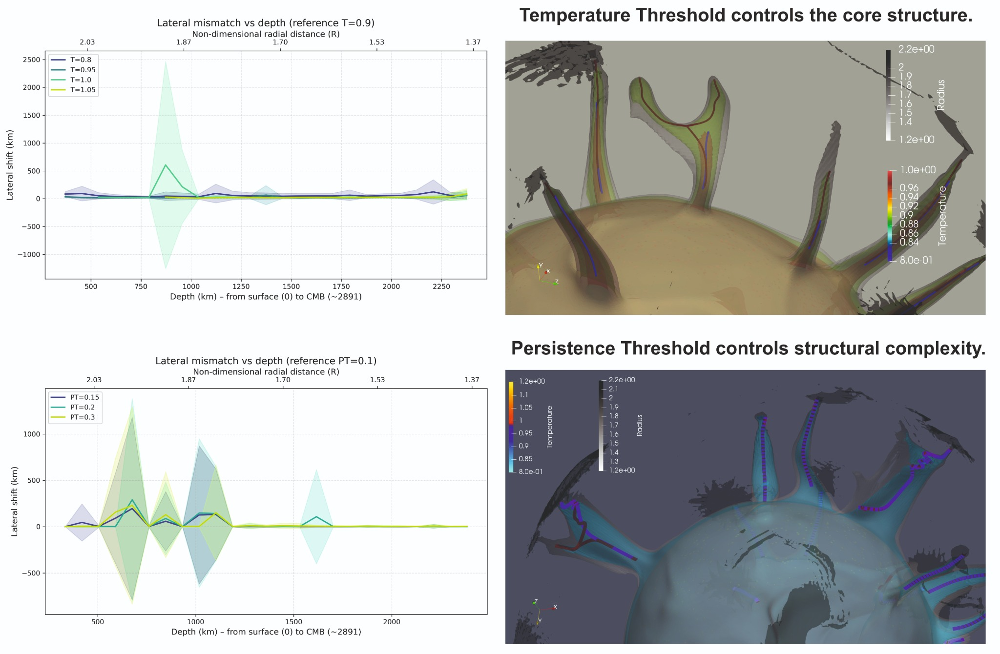
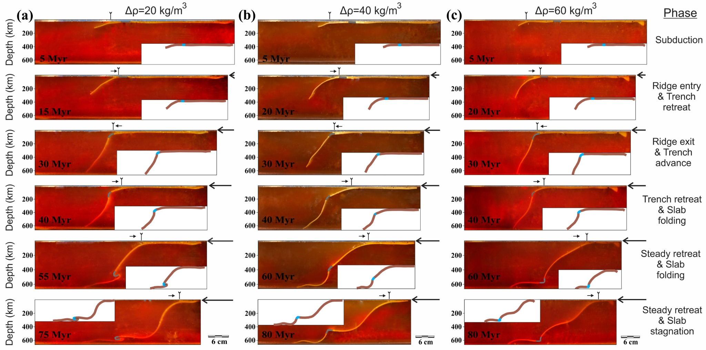
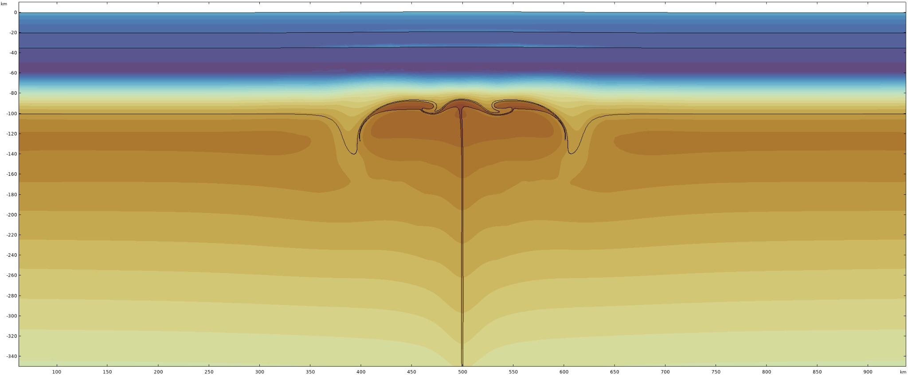
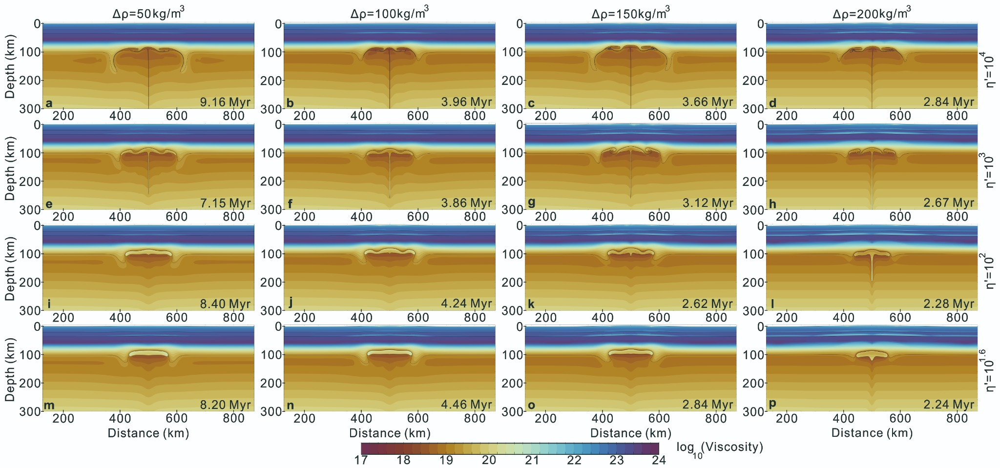
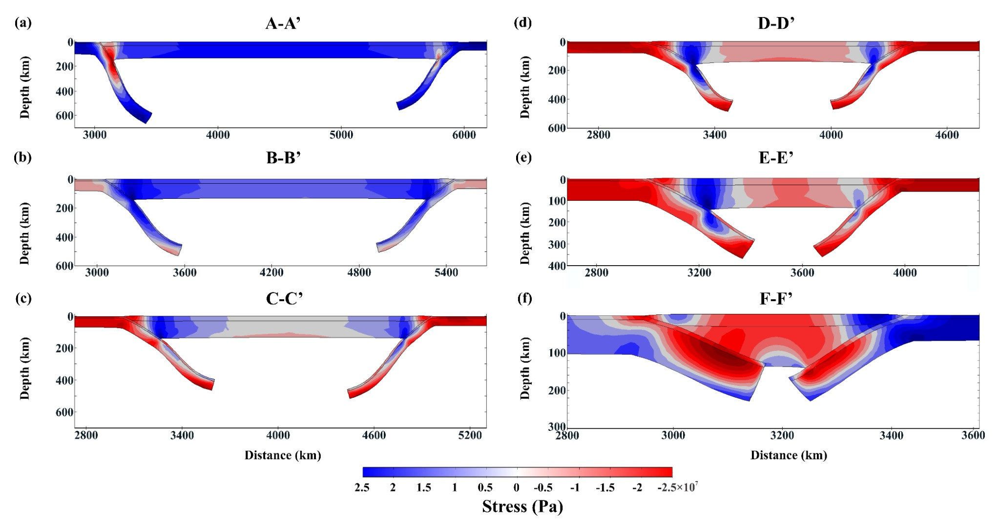

Subduction and trench dynamics
Investigating slab bending, subduction geometry, trench topography, and overriding-plate deformation.
Numerical investigations of subduction, mantle plumes, and tectonic deformation.








Click a figure to view it at full size.
Investigating slab bending, subduction geometry, trench topography, and overriding-plate deformation.
Studying how mantle plumes modify lithospheric strength and produce dynamic topography.
Current Marie Skłodowska-Curie research on slab–plume interaction in the deep Earth.
Geodynamics, Solid Earth Geophysics, Structural Geology, Tectonics